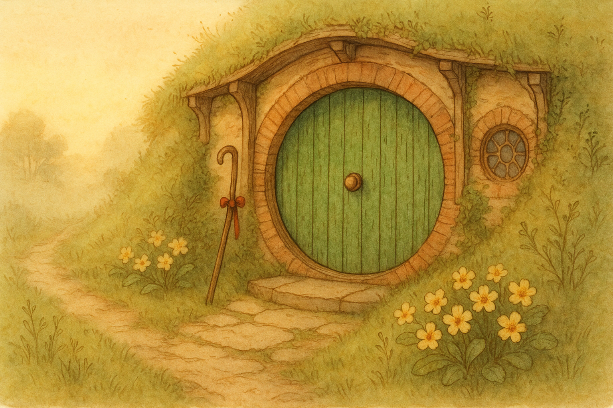

This morning I found myself fussing with a length of red ribbon, of all things — not for a party, mind you, but for a walking-stick. It had been leaning in its proper corner by the green round door, and I thought it deserved a cleaner grip and a cheerful knot. The Shire is like that: it lets a hobbit practice bravery with small, harmless objects.
I tied the ribbon just below the crook and tested it with my thumb. It was an absurdly little ceremony, and yet it made the stick feel less like an old reminder and more like a companion — as if it were saying, “Whenever you fancy it, the Road can begin with one step from your own doorstep.” There is a great deal of Middle Earth that will not be managed by tidy knots, but a tidy knot can steady a hand all the same.
I once blurted, rather louder than good sense, “I’m going on an adventure!” and the whole business began before I’d even finished my tea. These days I do not shout it at breakfast. Still, I like to keep one small thing ready — a stick, a cloak brushed clean, seed-cake wrapped up — so that courage has somewhere to put its feet when it arrives.
Filed under: Middle Earth • Written at Bag End